In this report, the AI4I 2020 Predictive Maintenance Dataset is analyzed using Pandas, Matplotlib and Seaborn.
The dataset contains 10,000 measurements from a simulated industrial machine.
Data Preparation
Show Python code
# Importiert die Bibliotheken zur Datenverarbeitung und Visualisierung.import pandas as pdimport matplotlib.pyplot as pltimport seaborn as sns# Lädt den AI4I-Datensatz.url ="https://archive.ics.uci.edu/static/public/601/ai4i+2020+predictive+maintenance+dataset.zip"df = pd.read_csv(url)# Behält die drei Messgrößen und die UDI.df = df[["UDI", "Torque [Nm]", "Rotational speed [rpm]", "Air temperature [K]"]]# Zeigt die ersten fünf Datensätze an.df.head()
UDI
Torque [Nm]
Rotational speed [rpm]
Air temperature [K]
0
1
42.8
1551
298.1
1
2
46.3
1408
298.2
2
3
49.4
1498
298.1
3
4
39.5
1433
298.2
4
5
40.0
1408
298.2
Basic Plots
Lineplot
Show Python code
# Erstellt ein Liniendiagramm des Drehmoments über der UDI.plt.figure(figsize=(7, 4))sns.lineplot(data=df, x="UDI", y="Torque [Nm]")plt.title("Torque over UDI")plt.xlabel("UDI")plt.ylabel("Torque [Nm]")plt.show()
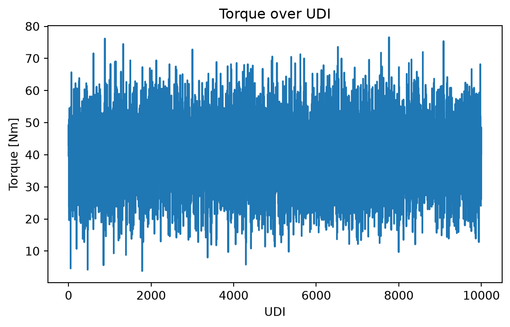
Histograms
Show Python code
# Legt die drei Messgrößen fest.columns = ["Torque [Nm]", "Rotational speed [rpm]", "Air temperature [K]"]# Erstellt für jede Messgröße ein Histogramm.for column in columns: plt.figure(figsize=(8, 4)) sns.histplot(data=df, x=column, bins=30) plt.title(f"Distribution of {column}") plt.xlabel(column) plt.ylabel("Count") plt.show()
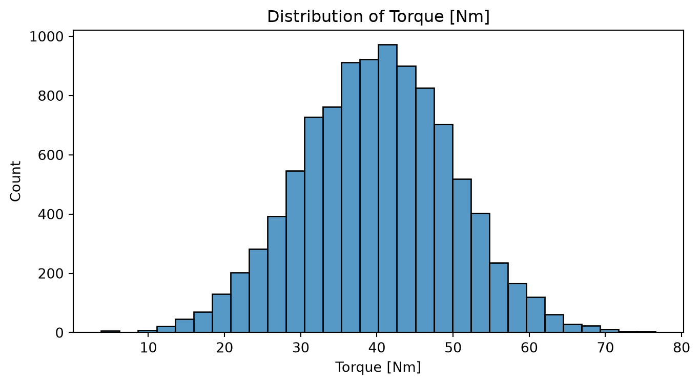
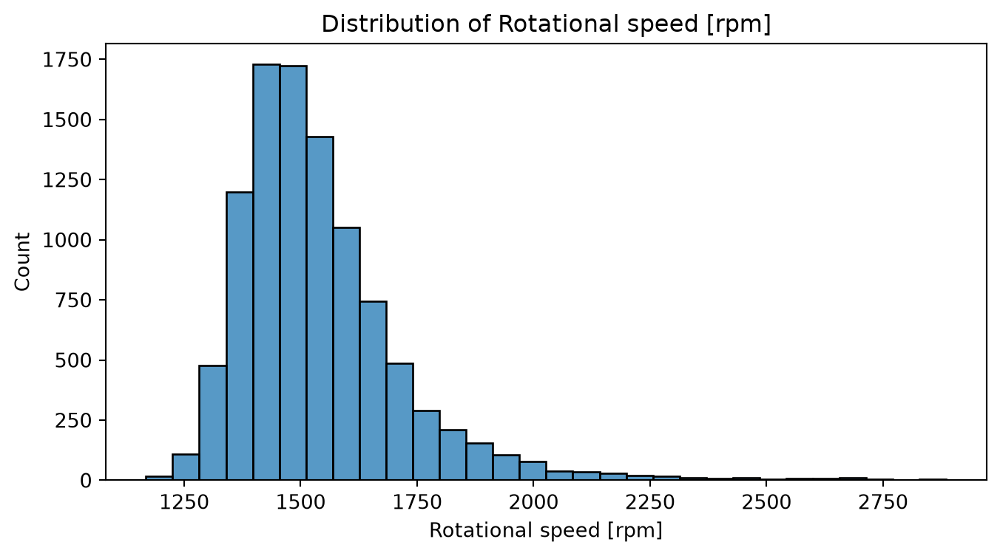
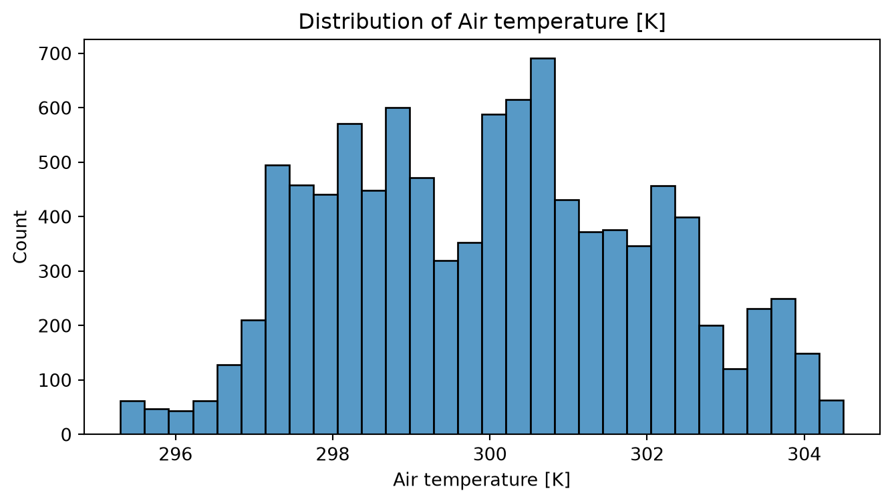
Boxplots and Violinplots
The boxplot summarizes statistical values, while the violinplot also shows the estimated distribution of measurements.
Show Python code
# Vergleicht Boxplots und Violinplots der drei Messgrößen.columns = ["Torque [Nm]", "Rotational speed [rpm]", "Air temperature [K]"]for column in columns:# Erstellt zwei Diagramme nebeneinander. fig, axes = plt.subplots(1, 2, figsize=(7, 4))# Zeigt Median, Quartile, Whisker und mögliche Ausreißer. sns.boxplot(data=df, y=column, ax=axes[0]) axes[0].set_title(f"Boxplot: {column}")# Zeigt die geschätzte Dichteverteilung. sns.violinplot(data=df, y=column, ax=axes[1]) axes[1].set_title(f"Violinplot: {column}") plt.tight_layout() plt.show()
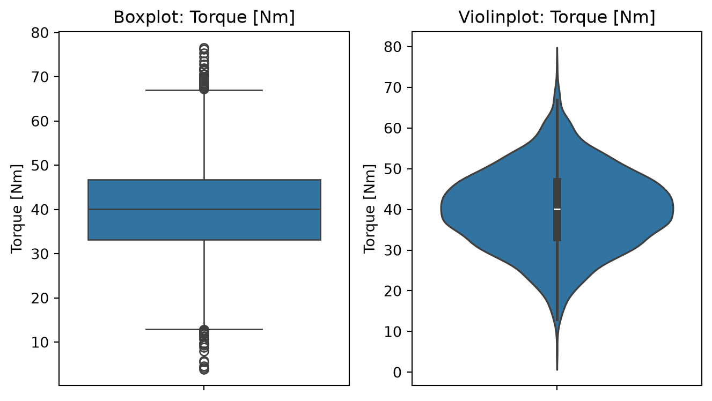
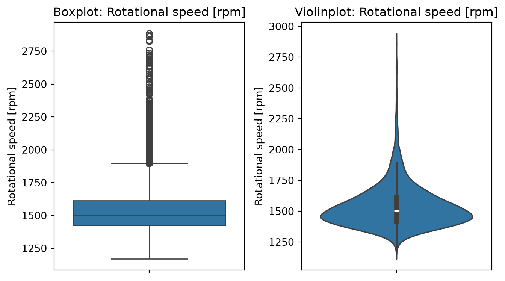
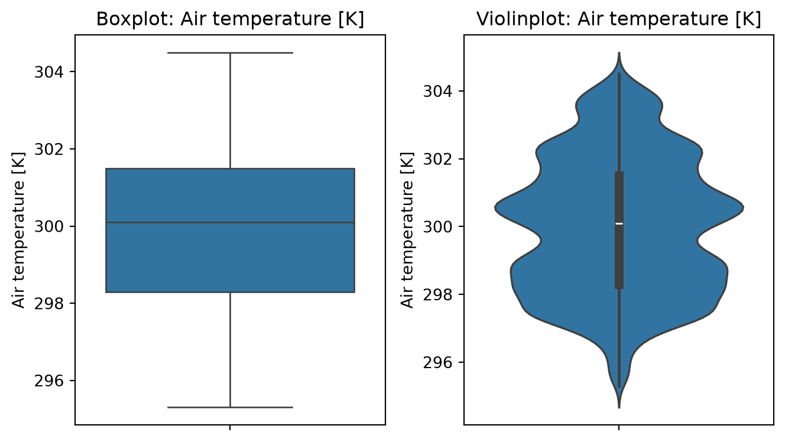
Relationships Between Variables
Scatterplot
Show Python code
# Zeigt Drehmoment und Drehzahl.# Die Lufttemperatur wird durch die Farbe dargestellt.plt.figure(figsize=(7, 4))sns.scatterplot( data=df, x="Rotational speed [rpm]", y="Torque [Nm]", hue="Air temperature [K]")plt.title("Torque vs. Rotational Speed")plt.xlabel("Rotational speed [rpm]")plt.ylabel("Torque [Nm]")plt.show()
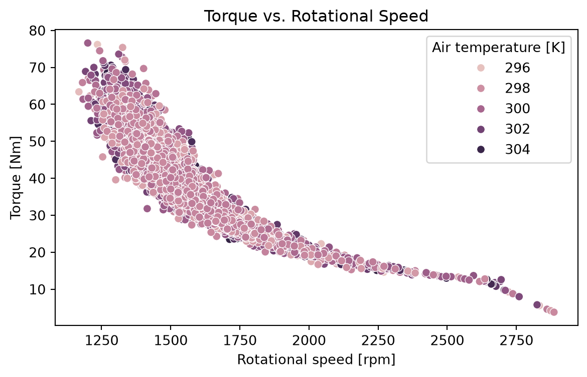
Pairplot
Show Python code
# Untersucht die paarweisen Zusammenhänge aller drei Messgrößen.columns = ["Torque [Nm]", "Rotational speed [rpm]", "Air temperature [K]"]sns.pairplot(df[columns])plt.show()
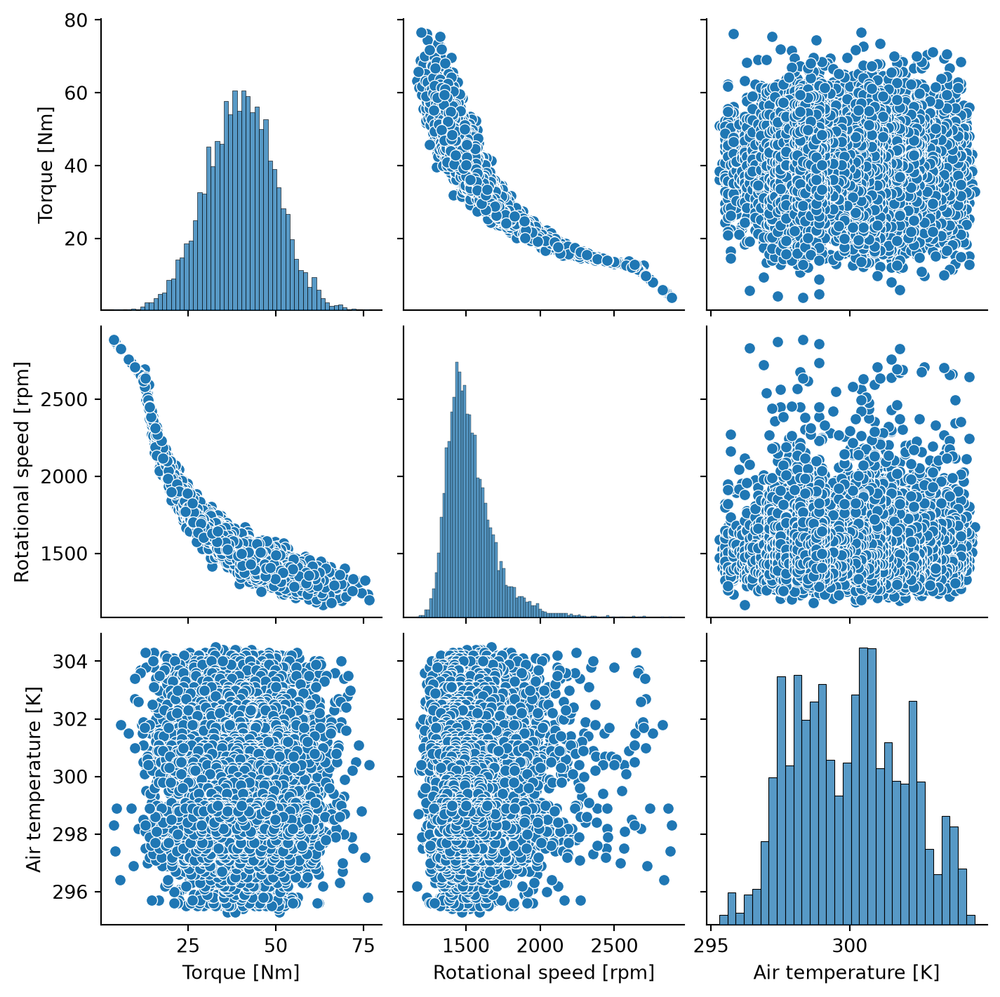
Correlation Heatmap
Show Python code
# Berechnet die Pearson-Korrelationsmatrix.columns = ["Torque [Nm]", "Rotational speed [rpm]", "Air temperature [K]"]correlation = df[columns].corr()# Zeigt die Korrelationen als farbige Matrix.plt.figure(figsize=(8, 6))sns.heatmap( correlation, annot=True, fmt=".2f", cmap="coolwarm", vmin=-1, vmax=1)plt.title("Correlation Heatmap")plt.show()
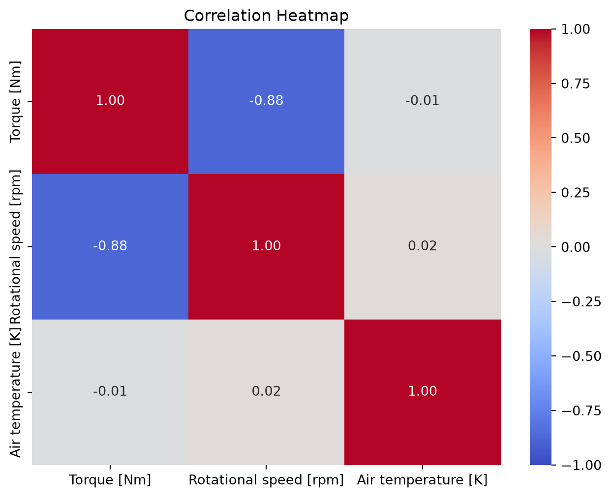
The Pearson correlation coefficient ranges from -1 to +1. Negative values indicate a negative linear relationship, while positive values indicate a positive linear relationship.
Advanced Plots
Jointplot
Show Python code
# Untersucht Drehmoment und Lufttemperatur.# kind="reg" ergänzt eine lineare Regressionsgerade.sns.jointplot( data=df, x="Air temperature [K]", y="Torque [Nm]", kind="reg")plt.show()
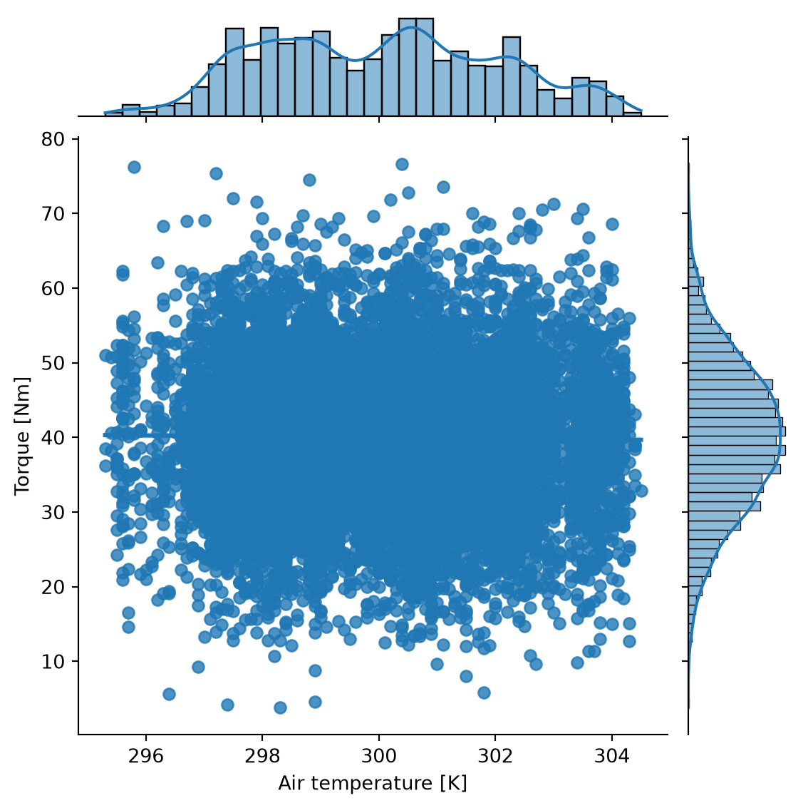
Stripplot
Show Python code
# Unterteilt die Drehzahl in drei gleich breite Bereiche.df["Speed category"] = pd.cut( df["Rotational speed [rpm]"], bins=3, labels=["Low", "Medium", "High"])# Zeigt die Drehmomentwerte nach Drehzahlkategorien.plt.figure(figsize=(7, 4))sns.stripplot( data=df, x="Speed category", y="Torque [Nm]", hue="Speed category", jitter=True, size=2)plt.title("Torque Distribution by Rotational Speed")plt.xlabel("Rotational speed category")plt.ylabel("Torque [Nm]")plt.show()
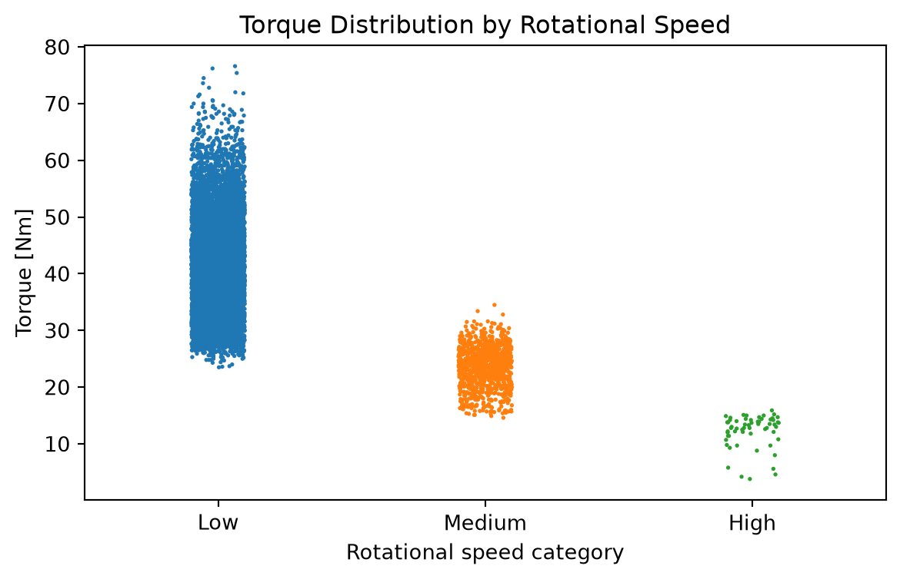
Countplot
Show Python code
# Unterteilt das Drehmoment in zehn gleich breite Intervalle.df["Torque bin"] = pd.cut( df["Torque [Nm]"], bins=10, labels=[f"Intervall {i}"for i inrange(1, 11)])# Zählt die Messwerte in jedem Intervall.plt.figure(figsize=(7, 4))sns.countplot(data=df, x="Torque bin")plt.xticks(rotation=45, ha="right")plt.xlabel("Torque interval")plt.ylabel("Count")plt.tight_layout()plt.show()
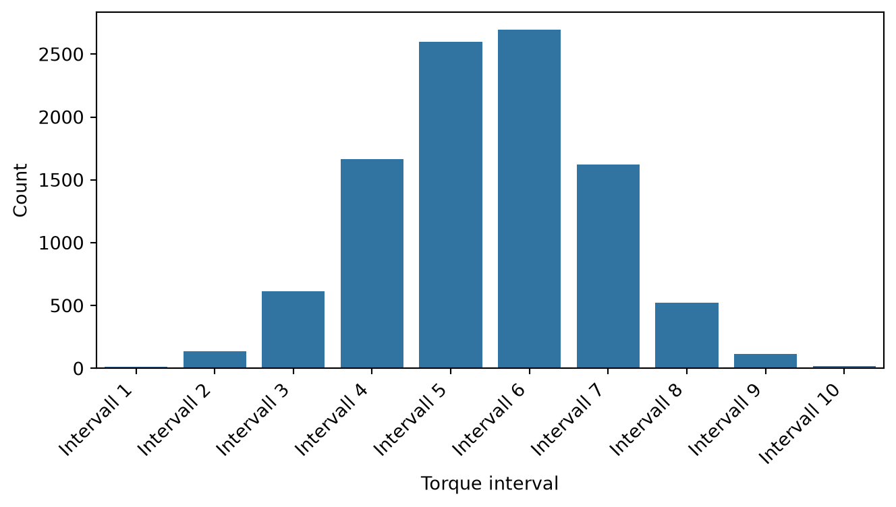
Observations
Are there any obvious outliers in the data?
Yes, the boxplots show that especially torque and rotational speed have some outliers.
Which two variables seem most related?
Torque and rotational speed show a negative relationship.
Are there any non-linear patterns visible?
No clear non-linear patterns were identified in the scatterplots.
How are the distributions shaped?
Torque is approximately normally distributed, with most measurements around 40 Nm.
Rotational speed has a right-skewed distribution, with most values around 1500 rpm.
Air temperature does not show a clear normal distribution and has an irregular distribution over the measured range.